Activitat 1 - Windows
Windows Server 12 - GUI
1. Instal·la un servidor Windows Server 2012 amb GUI i:
1.1 Modifica el nom del servidor
1.2 Posa una ip fixa
1.3 Actualitza el sistema
1.4 Desactiva les actualitzacions
1.5 Treu les icones típiques de l'escriptori
1.6 Instal·la les guestadditions
1.7 Desactiva el firewall
1.8 Comprova que la zona horària sigui la correcta
1.9 Reinicia la màquina i FES-TE UNA CÒPIA DE SEGURETAT
2. Instal·la un servidor Windows Server 2012 sense GUI amb mode Core i:
2.1. Modifica el nom del servidor
Ara editarem diferents apartats del servidor Windows 2012 amb la comanda
sconfig. 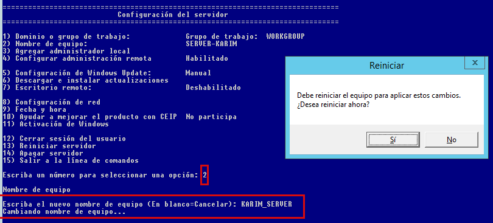 1. Cal seleccionar el numero 2 per accedir a les opcions de cambiar el nom dels Servidor.
2. Despres ja podem escriure el nou nomKARIM-SERVERdel servidor i reiniciem l'equip per a que s'apliquen els canvis.
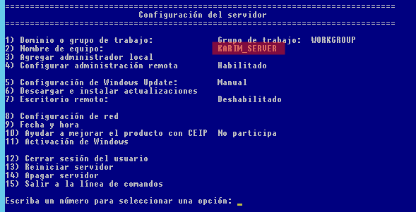2.2. Posa una ip fixa
Ara afegirem una nova IP estatica utilitzant la comanda
sconfig.
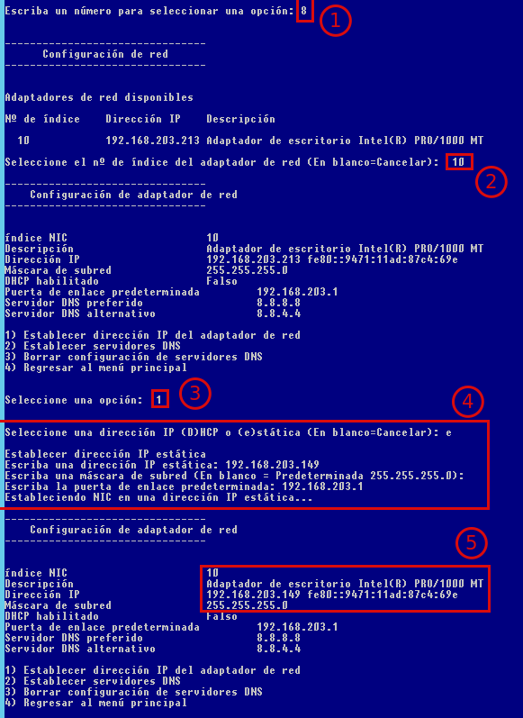
1. En primer lloc seleccionem el numero 8 per entrar a les opcions dered.
2. Despres seleccionem el numero 10 el qual serveix per indica el numero de de index de l'adaptador.
3. Ara cal indicar el numero 1 per indicar que volem establir una nova IP.
4. En aquest punt seleccionemeper indicar que volem afegir una IP estatica.
5. En l'ultim punt ja podrem observar com s'ha canviat la IP nova.2.3. Desactiva les actualitzacions
Ara desactivarem el
firewallutilitzant la comandasconfig.
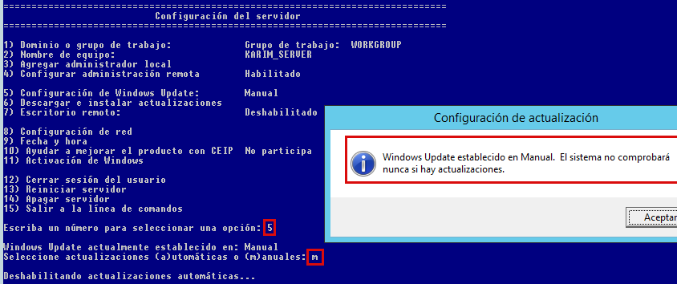 1. Començem seleccionant el numero 5 per accedir a les opcions de actualitzacions.
2. Despres seleccionemmper indicar que les actualizacions siguen manuals i no automatiques.2.4. Comprova que la zona horària sigui la correcta
Ara comprovarem que la zona horària sigui la correcta utilitzant la comanda
sconfig.
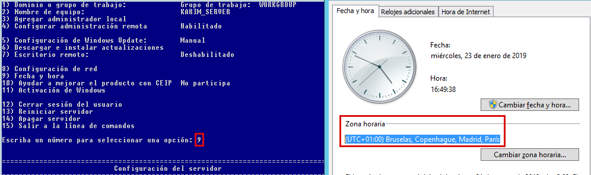 1. Per poder comprovar la zona horaria cal seleccionar el numero 9.
2. Un cop seleccionat el numero corresponent ens surtira el rellotge hi ho podrem comprovar.2.5. Reinicia la màquina i FES-TE UNA CÒPIA DE SEGURETAT
Ara reiniciarem el servidor utilitzant la comanda
sconfig.
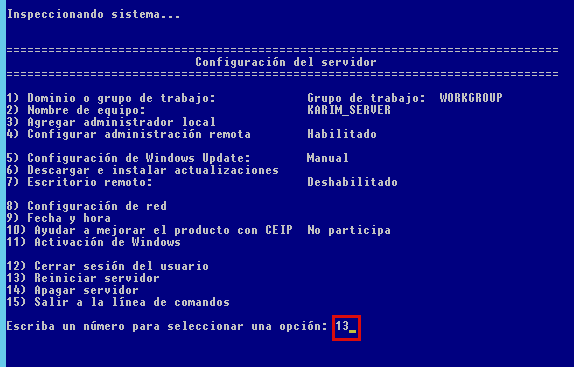
1. Seleccionarem el numero 13 que serveix per reiniciar el servidor. 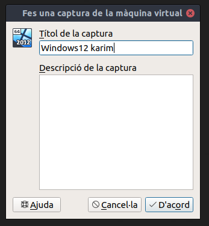
2. Un cop reiniciat fem unacòpia de seguretatfent una instantanea ambVirtualBox.
3. Ara que ja tens còpies de les màquines anem a fer unes proves
3.1. Treure la interfície Shell de la màquina amb GUI, o sigui, deixar només una interfície molt bàsica (has de fer-ho mitjançant l’opció de “Quitar roles y características”)
En primer lloc seleccionem l'opció de
Quitar roles y funcionesque estroba a la part superior dins deAdministrar.
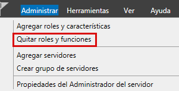
1. Despres anem a l'apartatCaracteristicas.
2. Un cop dins deseleccionem l'opcioWindows PowerShell.
3. Ara ja podem seleccionarQuitar caracteristicaper treure-la. 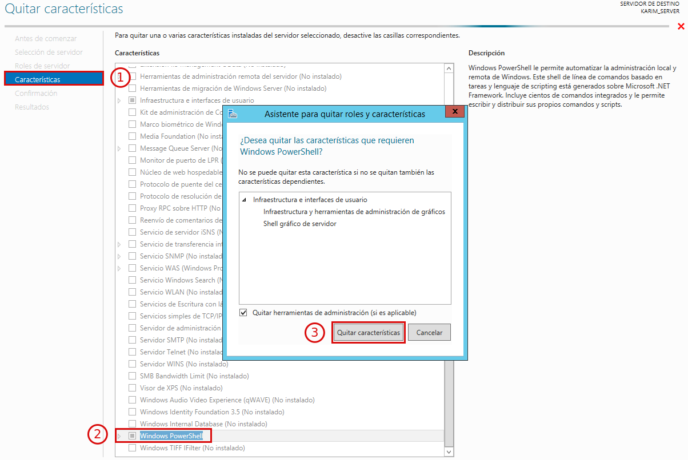
Ara seleccionem l'opcio de reinici automatic i seguim amb el process. 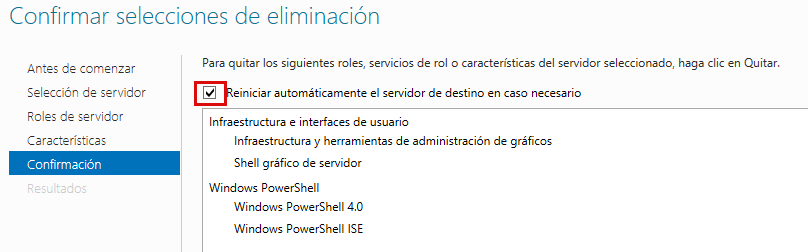
Ara hem desperar a que es carregue el process. 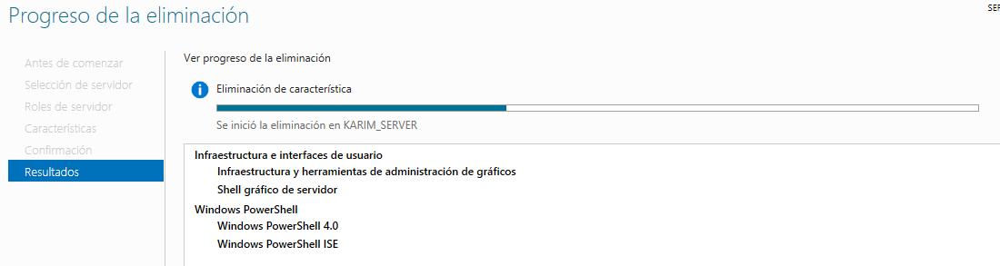
Un cop reiniciat ja podrem gaudir del nostre servidor sense part Grafica. 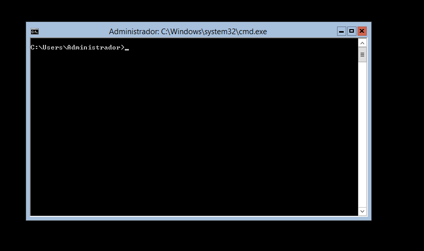
3.2. Afegir una interfície molt bàsica a la màquina amb Core (a continuació tens les passes a seguir)
3.2.1. Afegim la .iso del server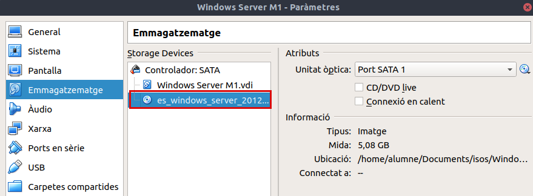
3.2.2. Executem powershell
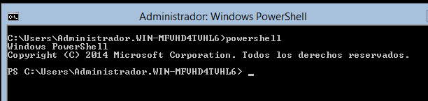
3.2.3. mkdir C:\wim
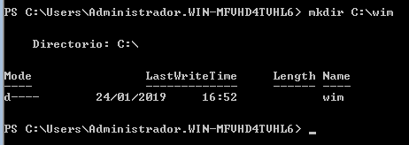
3.2.4. Assignem la nostra versió amb dism /get-wiminfo /wimfile:d:\sources\install.wim
3.2.5. Muntem al directori creat ambdism /mount-wim /wimfile:d:\sources\install.wim /index:2 /mountdir:c:\wim /readonly
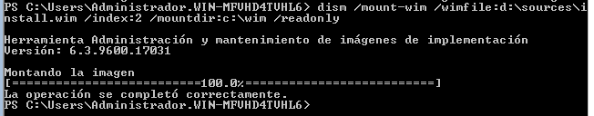
3.2.6. Instal·lem amb Install-WindowsFeature Server-Gui-Mgmt-Infra –Source C:\wim \Windows\WinSxS
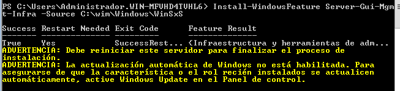
3.2.7. Reiniciem amb shutdown –r –t 0
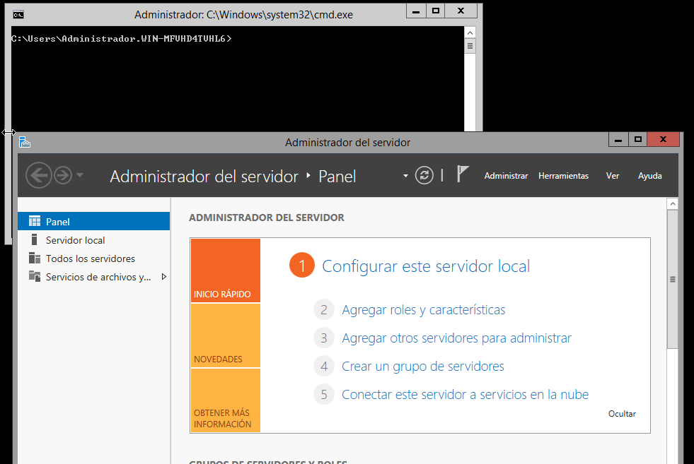
Reiniciem i comprobem que ja esta instal·lat.